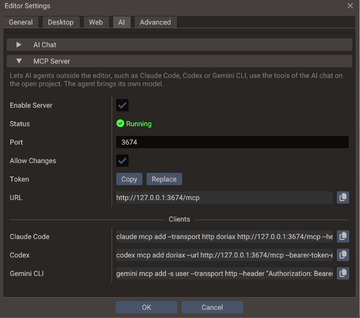

MCP Server¶
The editor can run a Model Context Protocol (MCP) server, so AI agents outside it — Claude Code, Codex, Gemini CLI and other MCP clients — can work on the open project with the same tools as the built-in AI Chat: inspect scenes and entities, add components, write scripts, fork shaders, run a scene and read the output log.
The agent brings its own model and account. The editor only runs the tools, so no API key is needed here and the AI Chat can stay closed. The server works on whichever project the editor has open, so opening another project changes what agents see, and an agent can open or create one itself.
Turning it on¶
- Open Edit → Editor Settings → AI and expand MCP Server.
- Tick Enable Server and press OK.
The Output panel reports MCP server listening on http://127.0.0.1:3674/mcp, and the
server starts with the editor from then on.

| Setting | Default | Effect |
|---|---|---|
| Enable Server | Off | Listens for MCP clients on 127.0.0.1 only, so nothing outside this computer can reach it |
| Status | — | Running, Stopped, or why the server could not start, such as a port another program holds |
| Port | 3674 |
The local TCP port. Change it when another program uses it, or to run two editors with the server on |
| Allow Changes | On | Off leaves agents only the read-only tools, which inspect and search the project |
| Token | Generated | The secret every request must carry. Copy puts it on the clipboard and Replace makes a new one |
| URL | — | The endpoint, http://127.0.0.1:<port>/mcp |
| Clients | — | Ready commands that add the editor to Claude Code, Codex and Gemini CLI, each with a copy button |
The token is created and kept the first time the section opens, and replacing it takes effect at once, so a command copied from here keeps working whether the dialog closes with OK or Cancel. The other fields apply on OK.
Connecting Claude Code¶
Copy the Claude Code row and run it in a terminal:
claude mcp add --transport http quantum http://127.0.0.1:3674/mcp \
--header "Authorization: Bearer <token>"
The command adds the server for the folder you run it in, so run it in the project folder,
where Claude Code can also read the project's files. Add --scope user after
--transport http to have it in every folder. In a Claude Code session, /mcp then lists
quantum as connected, with its tools.
Connecting Codex¶
Copy the Codex row and run it in a terminal:
Codex keeps the token out of its configuration: it reads it from the QUANTUM_MCP_TOKEN
environment variable each time it connects. Set that variable to the token (Copy on the
Token row) where Codex runs, for example in your shell profile:
On Windows, setx QUANTUM_MCP_TOKEN <token> sets it for terminals opened afterwards.
Connecting Gemini CLI¶
Copy the Gemini CLI row and run it in a terminal:
gemini mcp add -s user --transport http --header "Authorization: Bearer <token>" \
quantum http://127.0.0.1:3674/mcp
-s user saves the server in your user settings. Without it, Gemini CLI writes it to
.gemini/settings.json in the current folder, token included, where it could end up in
version control.
Other clients¶
Any other client that speaks MCP over Streamable HTTP and can send a custom header works:
give it the URL and the header Authorization: Bearer <token>. A client that can only start
local (stdio) servers needs a stdio-to-HTTP bridge in between.
Keep the token out of version control
The token belongs to one machine and lets its holder change your project. When a
client's configuration is committed, such as Claude Code's project-scoped .mcp.json,
read the token from an environment variable instead of writing it there:
What agents can do¶
The server offers every tool the AI Chat uses, with the same checks and the same results,
plus open_project and create_project, which only MCP clients get: the chat runs inside
the editor, and switching projects would end its own turn. Each tool is marked read-only
or not (readOnlyHint), which clients can use when they ask you to confirm a call.
When a client connects, the server also sends the engine rules the AI Chat's model gets: how Lua and C++ scripts are written, to confirm an API in the engine source before using it, how physics bodies get their shapes, how to verify a script by running the scene and reading the log. An agent that reads them follows the same conventions as the AI Chat.
How calls run¶
- Each call runs on the editor's main thread between frames, one at a time, exactly as if the AI Chat made it. A long action such as an export holds the editor until it ends.
- Scene edits go through the editor's undo history, so Edit → Undo reverts what an agent did.
- Each change an agent makes is logged in the Output panel as
MCP: <what it did>, and a failed call as a warning or an error. - While a project is loading, calls wait. A call still waiting after two minutes fails, and the agent is told to try again.
- A call the client gives up on before it starts, for example when you cancel it, is dropped. One already running is asked to stop early where the action supports it, as an export or an asset download does.
Scenes are edited through the tools, not on disk
The editor holds open scenes and project.yaml in memory and writes them back when it
saves, so an agent that edits those files directly loses its change at the next save
or overwrites yours. The server tells agents this; remind yours if it keeps editing the
files. Scripts are ordinary files, but writing one with the update_script_file tool
also refreshes the properties of every entity that uses it.
Saving an agent's work¶
Agents save with save_scene, save_all_scenes and save_project, like the AI Chat.
Two saves would need a dialog that only you can answer, so the tools take a path instead:
- A scene that was never saved.
save_scenewith a project-relativepath, such asscenes/Level1.scene, saves it there. Without one, and withsave_all_scenes, which takes no paths, the editor opens the Save Scene dialog for you. - A temporary project.
save_projectwith an absolutepathmoves the project out of the system temp folder, as Save Project does, into a directory that is empty or does not exist yet. An optionalnamerenames it too. A project that is not temporary is saved where it is, withoutpath.
Tools that would stop to ask you about unsaved work refuse instead, and tell the agent
what to save first. create_scene, for example, closes the selected scene, so it refuses
while that scene or one of its child scenes has unsaved changes.
Opening and creating projects¶
Two tools replace the project the editor has open, and only MCP clients have them:
open_projectopens an existing project directory, the one holdingproject.yaml, as File → Open Project does.create_projectcreates a project in an empty or new directory and opens it. It is named after the directory unless the agent passesname, and starts with an unsaved 3D scene, New Scene, whichsave_scenewith apathkeeps.
Both take an absolute path. The switch happens after the call returns, and the agent's next calls wait until the new project has loaded.
The editor does not drop work to switch, so both refuse where its menus would ask you first:
| Refused while | Resolved by |
|---|---|
| A scene is playing, saving or loading | Stopping play mode (control_play_mode), or retrying once the save or load ends |
| A scene has unsaved changes | Saving it with save_scene, with a path if it has no file yet |
| A script in the Code Editor has unsaved edits | You saving or discarding them; the agent cannot |
| The project is temporary and holds work: a saved or changed scene | Moving it out of the temp folder with save_project and a path |
The temporary project the editor opens at startup holds no work until you or an agent change it, so an agent can switch away from it at once.
Security¶
The server is meant for agents running on your own computer:
- It listens on
127.0.0.1only. - Every request must carry the token as
Authorization: Bearer <token>. A missing or wrong token is answered with HTTP401. - Requests from web pages are refused with HTTP
403: the server checks theOriginheader, so a site cannot reach it through your browser, not even by pointing its own domain at127.0.0.1. - The token is stored obfuscated in
ai_keys.dat, beside the editor'ssettings.yaml, and never in the project.
Treat the token like access to the editor itself. With Allow Changes on, an agent can write scripts and build settings, and those run on the next Play or export. A replaced token applies from the next request, so every connected client needs the new command.
Troubleshooting¶
| Symptom | Cause and fix |
|---|---|
| Status says it could not listen on the port | Another program, or another editor with the server on, holds the port. Pick another Port, press OK, and add the server to the client again with the new URL |
The client reports 401 or Missing or wrong token |
The token was replaced, or the command came from another machine. Run the client's command from Clients again, after claude mcp remove quantum for Claude Code; for Codex, update QUANTUM_MCP_TOKEN instead |
| The client cannot connect | The server only runs while the editor does, and only with Enable Server on. Start the editor, then reconnect from the client; in Claude Code, /mcp shows the server's status |
| Calls fail with Changes are turned off | Allow Changes is off. Turn it on, or ask the agent only for inspections |
| Calls fail with The editor was busy | A project load took longer than two minutes. Try again once it finishes |
open_project or create_project fails over unsaved work |
The editor does not drop work to switch projects. Let the agent save it, or save or discard it yourself; see Opening and creating projects |
| A Save Scene dialog opens while an agent works | The agent saved a scene that has no file yet without a path. Answer the dialog, or ask the agent to pass path to save_scene |
| The agent still lists tools that Allow Changes removed, or misses ones it added | Clients keep the tool list they read when they connected. Reconnect the client |
Protocol details¶
For client authors:
- Transport: Streamable HTTP on one endpoint,
POST /mcp. Every response is a single JSON object, never an SSE stream.GETandDELETEreturn405. - Versions:
2026-07-28(stateless:server/discover,_metaon every request, and the mirroredMCP-Protocol-Version,Mcp-MethodandMcp-Nameheaders checked), plus theinitialize-based2025-11-25,2025-06-18and2025-03-26. No sessions are created. - Capabilities: tools only, with no resources, prompts or change notifications. The
tool list only changes with Allow Changes, but that can happen at any time, so under
2026-07-28theserver/discoverandtools/listresults are marked never to be cached (ttlMs: 0,cacheScope: "private"). - Results: text content holding the action's message followed by its data as JSON. A
failed action is a result with
isError: true, so the model can correct itself; an unknown tool or a malformed request is a JSON-RPC error.
Where the values are stored¶
| File | Key | Holds |
|---|---|---|
settings.yaml |
mcp_server |
enabled, port and allow_changes |
ai_keys.dat |
mcp_server |
The token, obfuscated and bound to this machine |
Both files are in the editor's settings folder, which the FAQ lists per platform.
See also¶
- Editor Settings — the MCP Server section, beside the AI Chat's keys
- Command-Line Tools — exports, shader builds and benchmarks without the editor window
- Model Context Protocol — the specification